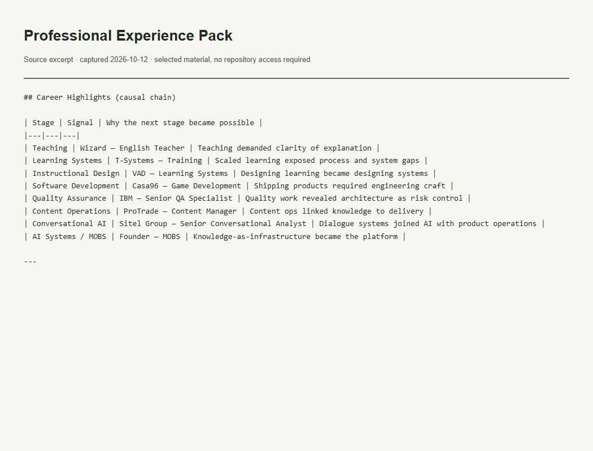

Evidence of the work
Documented professional journey
What this evidence demonstrates
Records the declared professional roles and career path used by this portfolio.

Read accessible verbatim transcript
## Career Highlights (causal chain) | Stage | Signal | Why the next stage became possible | |---|---|---| | Teaching | Wizard — English Teacher | Teaching demanded clarity of explanation | | Learning Systems | T-Systems — Training | Scaled learning exposed process and system gaps | | Instructional Design | VAD — Learning Systems | Designing learning became designing systems | | Software Development | Casa96 — Game Development | Shipping products required engineering craft | | Quality Assurance | IBM — Senior QA Specialist | Quality work revealed architecture as risk control | | Content Operations | ProTrade — Content Manager | Content ops linked knowledge to delivery | | Conversational AI | Sitel Group — Senior Conversational Analyst | Dialogue systems joined AI with product operations | | AI Systems / MOBS | Founder — MOBS | Knowledge-as-infrastructure became the platform | ---
Context and limits
A founder-approved content record; not an independent employment verification.
The image captures a locally rendered literal excerpt from the verified file. It is not a GitHub UI screenshot or a running-application screenshot. The excerpt retains its original language.